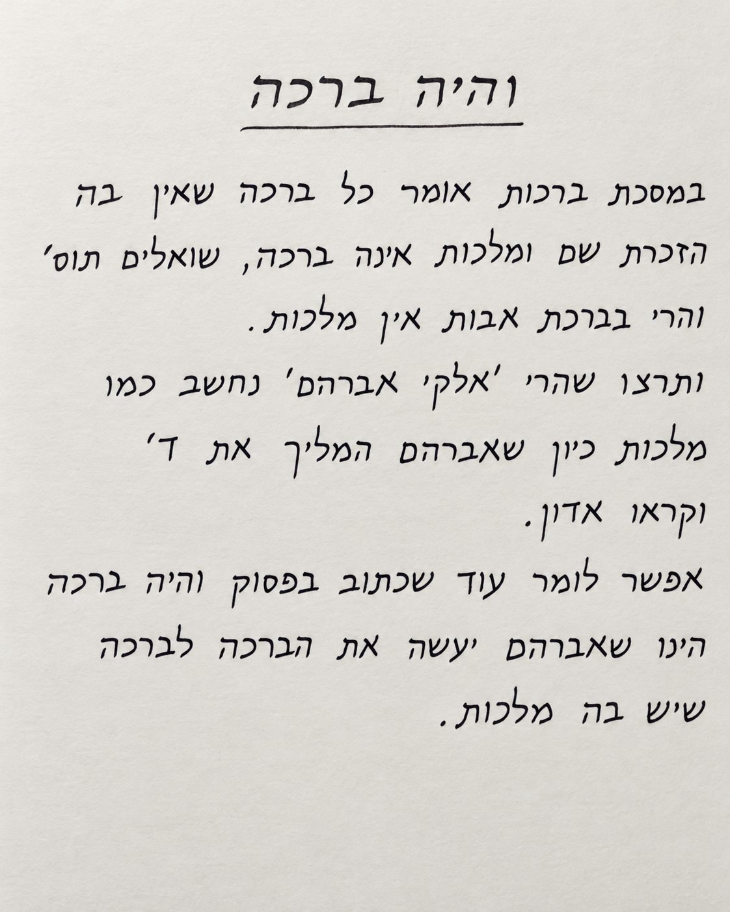
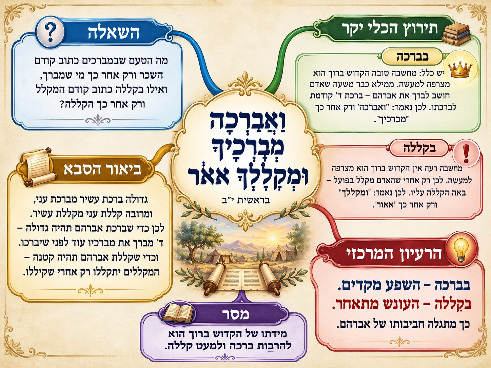
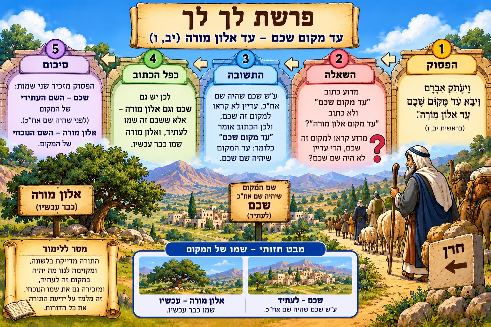
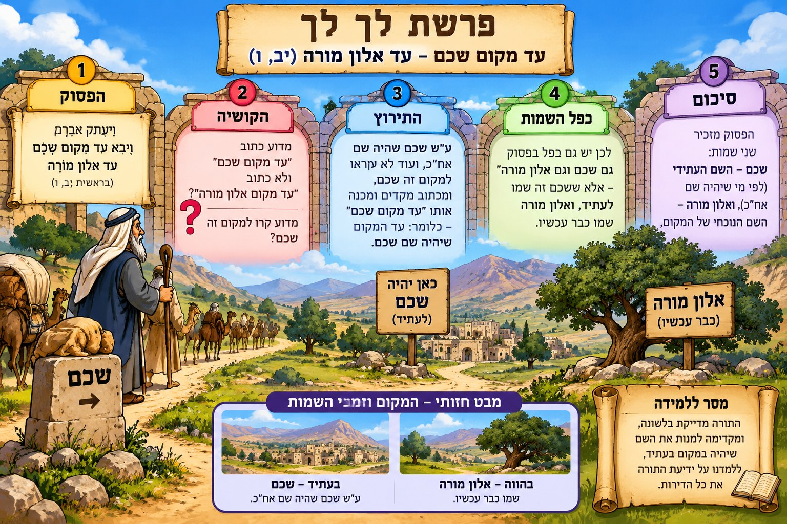

הסדר הרגיל ביציאה הוא מהבית, אחר כך מהעיר, ולבסוף מהארץ. מדוע התורה הפכה אותו?
התירוץ המיוחס לגר״ח מבריסק
אילו נאמרו הדברים כסדר היציאה, אפשר היה להבין אותם כמעשה אחד. הסדר ההפוך מדגיש, לפי החידוש, שלוש בחינות נפרדות של הציווי: מארצך, ממולדתך ומבית אביך.
מסר באהבת השם
כל שלב של הליכה בדרך השם בעל ערך. לא רק היעד חשוב, אלא גם ההתגברות והבחירה בכל שלב.
סגנון העריכה והפרומפט לשחזור
סגנון: Spoken – דרשה בעל פה בשלוש תחנות
ערוך את החידוש לדרשה שאפשר למסור בקול: פתיחה מעוררת סקרנות, הסבר פשוט לקושיה, תשובה בשלושה שלבים וסיום קליט. צור חומר לימודי בעברית תקנית, בכיוון RTL, על בסיס החידוש המצורף. הצג פסוק מדויק, קושיה, תירוץ ומסר חינוכי. אל תמציא ציטוטים או מקורות; הפרד בין מקור לבין הצעה פרשנית; שמור על צניעות ודיוק האותיות.
ייחוס הדברים לגר״ח מבריסק הובא מפי המשתמש וטעון אימות במקור מודפס.
Generate Handwritten Image – כתב יד תורני
״והיה ברכה״ – כיצד הזכרת האבות נחשבת מלכות?
״וֶהְיֵה בְּרָכָה״ (י״ב, ב׳)
הקושיה
אמרו חז״ל שכל ברכה שאין בה הזכרת השם ומלכות אינה ברכה. אם כן, כיצד בברכת אבות שבתפילת העמידה אין אומרים ״מלך העולם״?
תירוץ התוספות
בתוספות מובא ש״אלקי אברהם״ עולה במקום מלכות, מפני שאברהם היה הראשון שהמליך את הקדוש ברוך הוא בעולם וקראו אדון.
חידוש מוצע
אפשר לרמוז בלשון ״והיה ברכה״, שבזכות אברהם נעשית גם ברכת אבות לברכה שיש בה בחינת מלכות.
מסר באהבת השם
אברהם מגלה לעולם שהבורא הוא אדון הכול. גם בברכות שאנו אומרים נוכל לחשוב על מלכות השם באהבה.
התמונה המסכמת

התמונה שנוצרה עבור החידוש
סגנון העריכה והפרומפט לשחזור
סגנון: Generate Handwritten Image – כתב יד תורני
הכן צילום ריאליסטי של דף כתב יד עברי תורני מסודר, על נייר בהיר, עם כותרת מודגשת ״והיה ברכה״, שאלה, תירוץ תוספות וחידוש. כתוב עברית נכונה מימין לשמאל, ללא השמטות; תחושה של מחברת חידושים אישית. צור חומר לימודי בעברית תקנית, בכיוון RTL, על בסיס החידוש המצורף. הצג פסוק מדויק, קושיה, תירוץ ומסר חינוכי. אל תמציא ציטוטים או מקורות; הפרד בין מקור לבין הצעה פרשנית; שמור על צניעות ודיוק האותיות.
מראה המקום המדויק של התוספות מומלץ לבדיקה מול המקור לפני פרסום תורני מוסמך.
Mind Map Image – מפת חשיבה תורנית
״ואברכה מברכיך ומקללך אאור״ – מדוע סדר המילים משתנה?
בברכה מוזכרת תחילה ברכת השם ורק אחר כך המברך; בקללה מוזכר קודם המקלל ורק אחר כך קללת השם. מדוע?
הכלי יקר
מחשבה טובה הקדוש ברוך הוא מצרפה למעשה; לפיכך ברכת המברך מתחילה כבר ברצונו הטוב, והשכר קודם לדיבור. מחשבה רעה אינה מצטרפת למעשה באותו אופן, ולכן הקללה באה רק לאחר מעשה הקללה.
ביאור הסבא
ברכת עשיר משמעותית יותר מברכת עני, וקללת עני חמורה יותר מקללת עשיר. כדי שברכת אברהם תהיה גדולה, מתברכים מברכיו מראש; כדי שקללתו תהיה קלה, נענשים המקללים רק לאחר הקללה.
מסר באהבת השם
השם רואה ומוקיר גם רצון טוב. כדאי להרבות במחשבות טובות ובברכות לאחרים.
התמונה המסכמת

התמונה שנוצרה עבור החידוש
סגנון העריכה והפרומפט לשחזור
סגנון: Mind Map Image – מפת חשיבה תורנית
צור מפת חשיבה תורנית צבעונית רחבה בעברית, מרכז עם הפסוק, ענף לקושיה, שני ענפים לביאורי הכלי יקר והסבא, ובתחתית מסר מסכם. כל הטקסט בכיוון RTL והקריאה מימין לשמאל, תיבות לא עמוסות וסמלים עדינים. צור חומר לימודי בעברית תקנית, בכיוון RTL, על בסיס החידוש המצורף. הצג פסוק מדויק, קושיה, תירוץ ומסר חינוכי. אל תמציא ציטוטים או מקורות; הפרד בין מקור לבין הצעה פרשנית; שמור על צניעות ודיוק האותיות.
מדוע נאמר ״מקום שכם״, ולא רק ״שכם״? ומה מוסיפה התורה במילים ״עד אלון מורה״?
התירוץ המוצע
הכתוב מכנה את המקום ״מקום שכם״ על שם העיר שתיקרא כך בעתיד. ״אלון מורה״ הוא שמו של המקום באותה שעה. כך מתפרש הכפל: שם אחד לעתיד, ושם אחר לזמן המסופר.
דרך לזכור
דמיינו שני שלטים באותו מקום: ״עכשיו – אלון מורה״, ו״בעתיד – שכם״.
מסר באהבת השם
התורה מספרת על ההווה מתוך ידיעה של מה שיהיה בהמשך. זה מזכיר לנו שגם כשאיננו מבינים עדיין את התמונה, יש משמעות לדרך.
התמונה המסכמת

הגרסה המתוקנת בכיוון עברי (מימין לשמאל)

הגרסה הראשונה
סגנון העריכה והפרומפט לשחזור
סגנון: Memory Palace Image – ארמון זיכרון, מימין לשמאל
צור ארמון זיכרון חזותי בעברית בפרשת לך לך, עם חמש תחנות ממוספרות שנקראות מימין לשמאל: פסוק, קושיה, תירוץ, כפל שמות, מסקנה. הצג אברהם בדרך, עץ גדול עם שלט ״אלון מורה – עכשיו״ ושלט ״שכם – בעתיד״; פריסה רחבה ברורה וחצים ימינה־שמאלה לפי סדר עברי. צור חומר לימודי בעברית תקנית, בכיוון RTL, על בסיס החידוש המצורף. הצג פסוק מדויק, קושיה, תירוץ ומסר חינוכי. אל תמציא ציטוטים או מקורות; הפרד בין מקור לבין הצעה פרשנית; שמור על צניעות ודיוק האותיות.
הביאור על שמות המקום מובא כחידוש שנמסר בשיחה; יש לברר את התאמתו לפירושי הראשונים ולממצא ההיסטורי לפני קביעתו כעובדה.
מדוע אברהם צריך לעבור לצד אחר? היה יכול לומר ללוט לבחור מקום חדש, בעוד אברהם נשאר במקומו. מה באה ההבטחה ״ואימנה״ או ״ואשמאילה״ ללמד?
ב. פירוש רש״י
״בכל אשר תשב לא אתרחק ממך, ואעמוד לך למגן ולעזר״.
לפי רש״י, גם לאחר ההיפרדות אברהם שומר על הקרבה והאחריות ללוט. בהמשך, כאשר לוט נשבה, אברהם יוצא לעזרתו (פרק י״ד).
ג. קושיה על מקום דברי רש״י
רש״י מפרש על ״אם השמאל ואימנה״ ואינו מפרש בנפרד את ״ואם הימין ואשמאילה״. יש לשאול מדוע הפירוש נכתב דווקא במחצית הראשונה. אפשר לומר שהרישא משמשת דוגמה לכלל הפסוק, ואפשר לעיין בדיוק הלשוני בפירושים על רש״י; אין להסיק מן השתיקה שהבטחת העזרה נאמרה רק בכיוון אחד.
ד. דרך ביאור נוספת
בפשט הפסוק, הצדדים השונים מבטאים הפרדה בין שטחי המרעה, כדי למנוע חיכוך נוסף בין הרועים. זו אפשרות שראוי להשוות לפירוש רש״י המדגיש את העזרה ללוט.
העיקרון: נפרדים כדי למנוע מריבה, אבל לא מנתקים את האחריות ואת האהבה.
מסר באהבת השם: גם כשאי אפשר לשהות יחד בשלום, אפשר לכבד, לעזור ולשמור על קשר. אהבת השם מחנכת אותנו לאהבת הבריות גם בשעת מחלוקת.
מראי מקום: בראשית י״ג, ט׳ ורש״י; בראשית י״ד. לעיון נוסף: מפרשי רש״י ופירושי הפשט על אתר. הטעמים המוצעים לקושי בפירוש רש״י טעונים בדיקה מדויקת במקורותיהם.
סגנון העריכה והפרומפט לשחזור
סגנון: Textual Study – עיון פרשני
ערוך עיון תורני עם הפסוק, קושיה בפשט, רש״י, דיוק בדיבור המתחיל, אפשרות ליישוב ומסר חינוכי. צור חומר לימודי בעברית תקנית, בכיוון RTL, על בסיס החידוש המצורף. הצג פסוק מדויק, קושיה, תירוץ ומסר חינוכי. אל תמציא ציטוטים או מקורות; הפרד בין מקור לבין הצעה פרשנית; שמור על צניעות ודיוק האותיות.
רש״י מפרש ״יתנו לי מתנות״, ואילו למלך סדום אברהם אומר שלא ייקח אפילו מחוט ועד שרוך נעל. נוסף על כך, למה ביקש מתנות אם לא רצה ליהנות מהן לעצמו?
קושיית ההקפות
רש״י על ״וילך למסעיו״ מסביר שבחזרתו פרע הקפותיו. מי הלווה לאדם היוצא מארצו בלי לדעת אם ישוב?
מהלך החידוש
לא מדובר בהכרח בהלוואות כספיות דווקא, אלא בשאלות ובטענות שנשארו פתוחות: כיצד עובד השם עני בשעה שעובדי עבודה זרה עשירים? הפרסום שאברהם קיבל מתנות ושפרעה נענש מסייע לקידוש השם ולתשובה לטענות אלו.
מדוע אצל מלך סדום סירב?
באותו מקרה היה קידוש השם דווקא בסירוב, כדי שלא יאמר מלך סדום ״אני העשרתי את אברם״. לכן אותה שאיפה לכבוד שמים מובילה פעם לקבלה ופעם לסירוב.
מסר באהבת השם
העיקר אינו הכסף אלא מה עושים בו ולאיזה תכלית. אהבת השם מלמדת להשתמש באמצעים לשם הטוב.
סגנון העריכה והפרומפט לשחזור
סגנון: Comic Strip – קומיקס תורני בעל שש סצנות
צור קומיקס לימודי צנוע בעברית, שש מסגרות ברצף קריאה מימין לשמאל: אברהם ושרה במצרים, מתנות פרעה, סירוב למלך סדום, הקושיות, הביאור על כבוד שמים, פריעת ההקפות. בועות קצרות ומדויקות, ללא כיתובים משובשים. צור חומר לימודי בעברית תקנית, בכיוון RTL, על בסיס החידוש המצורף. הצג פסוק מדויק, קושיה, תירוץ ומסר חינוכי. אל תמציא ציטוטים או מקורות; הפרד בין מקור לבין הצעה פרשנית; שמור על צניעות ודיוק האותיות.
המהלך על ״פרע הקפותיו״ כהקפות של שאלות הוא ביאור רעיוני המוצע כאן, ולא הפשט המפורש ברש״י.
Infographic Notes – אינפוגרפיקת מצוות וברכות
מצווה הבאה לידך אל תחמיצנה – הברכה לחבר
״וַאֲבָרְכָה מְבָרְכֶיךָ״ (י״ב, ג׳)
דברי עבד המלך
בספר ״עבד המלך״ לרבי שמואל הומינר מובאת מעלת ברכת איש את רעהו. אמירת ״בוקר טוב״ או ״תהא בריא״ בכוונה ובאהבה היא מעשה בעל ערך, הקשור גם למצוות ״ואהבת לרעך כמוך״.
ברכה בלב שלם
הדגש הוא שלא לומר ברכה רק מן השפה ולחוץ; לברך בלבב שלם ובפה מלא.
ברכת המברך
״ואברכה מברכיך״ מלמד על ברכת השם למברכים. הובאה הפניה לחולין מ״ט ולהסבר התוספות בדבר הברכה למברכי ישראל.
התגובה
מובא גם עניין עניית ״אמן״ אחר ברכת החבר.
יישום בכיתה
כל תלמיד יחשוב על חבר ויברך אותו בברכה אמיתית, קצרה ומחממת לב.
מסר באהבת השם
כשאנחנו מרבים בברכה ובאהבה לבריות, אנו הולכים בדרכו של אברהם אבינו.
התמונה המסכמת
התמונה שנוצרה עבור החידוש
סגנון העריכה והפרומפט לשחזור
סגנון: Infographic Notes – אינפוגרפיקת מצוות וברכות
צור אינפוגרפיקה תורנית אנכית צבעונית לילדים, עם דמות מבוגר המברך ילד בחיוך וצניעות, חמש תיבות קצרות: מצוות אהבת רעים, ברכה בלב שלם, ברכת השם, לענות אמן ויישום. כותרת גדולה ״מצוה הבאה לידך אל תחמיצנה״. עברית RTL מדויקת ונוחה להדפסה. צור חומר לימודי בעברית תקנית, בכיוון RTL, על בסיס החידוש המצורף. הצג פסוק מדויק, קושיה, תירוץ ומסר חינוכי. אל תמציא ציטוטים או מקורות; הפרד בין מקור לבין הצעה פרשנית; שמור על צניעות ודיוק האותיות.
בראשית י״ב, ד׳; ט״ו | רש״י שמות י״ב, מ׳; סדר עולם; הרא״ש
פתק 1 · החשבון
גלות מצרים נמנית במניין 430 שנה; לפי הפירוש, 400 שנה נמנות מלידת יצחק, ועוד 30 שנה מברית בין הבתרים עד לידתו.
100 − 30 = 70
אם כן, אברהם היה בן 70 בברית.
פתק 2 · הקושיה
התורה אומרת שאברהם יצא מחרן כשהיה בן 75.
אך ברית בין הבתרים, שנכרתה בארץ ישראל, אירעה לכאורה בגיל 70.
כיצד היה בארץ לפני שיצא מחרן?
פתק 3 · התירוץ
אברהם הגיע לארץ ישראל פעם אחת עוד לפני היציאה המתוארת בכתוב.
לאחר ברית בין הבתרים חזר לחרן, ובגיל 75 יצא משם שוב.
שתי יציאות – ולא יציאה אחת.
פתק 4 · ההעמקה
הרא״ש דן בכך שאברהם התעכב בקיום הציווי ושב למקומו גם לאחר שבא לארץ. יש לעיין בדבריו ביחס לעונש הנזכר בסוגיה.
מה מלמדת אותנו הזריזות בקיום רצון השם?
ציר הזמן לפי תירוץ זה
גיל 70ביקור קודם בארץ וברית בין הבתרים.
בין גיל 70 לגיל 75חזרה לחרן.
גיל 75יציאה נוספת מחרן, ככתוב בתחילת פרשת לך לך.
גיל 100לידת יצחק – שלושים שנה לאחר הברית.
מסר באהבת השם: אהבת השם מתבטאת גם בזריזות לעשות את רצונו. בכל צעד נוסף בדרך הטובה אפשר לחזק את השמחה והקרבה להשם.
מראי מקום: רש״י שמות י״ב, מ׳; בראשית י״ב, ד׳; בראשית ט״ו; סדר עולם רבה, פרק א׳; רא״ש, יבמות, פרק הבא על יבמתו (לפי ההפניה שנזכרה בשיחה); תוספות ברכות ז׳ ע״ב; קרבן נתנאל. מומלץ לבדוק את הנוסח והסימן המדויק במהדורה הנלמדת לפני פרסום כספר.
סגנון העריכה והפרומפט לשחזור
סגנון: Sticky Notes – פתקיות צבעוניות
ערוך חידוש תורני בארבע פתקיות צבעוניות: חשבון, קושיה, תירוץ והעמקה; הוסף ציר זמן מאברהם בן 70 ועד בן 100. צור חומר לימודי בעברית תקנית, בכיוון RTL, על בסיס החידוש המצורף. הצג פסוק מדויק, קושיה, תירוץ ומסר חינוכי. אל תמציא ציטוטים או מקורות; הפרד בין מקור לבין הצעה פרשנית; שמור על צניעות ודיוק האותיות.
Quiz Game – משחק שאלות אינטראקטיבי
״ואתה תבוא אל אבותיך בשלום״ – כיצד יודעים שתרח עשה תשובה?
אולי אין כאן ראיה לכך שתרח עצמו עשה תשובה, כי ״ברא מזכה אבא״ – הבן מזכה את אביו?
הדיוק המיוחס לאדמו״ר מגור
כתוב ״אבותיך״ בלשון רבים. לפי החידוש, לשון זו רומזת לכך שהתקיימו שני העניינים: תרח עשה תשובה, וזכותו של אברהם הועילה לאבותיו.
משחק כיתה
שאלו: מה מדייקים מהמילה ״אבותיך״? א. יחיד; ב. רבים; ג. מקום בארץ; ד. גיל אברהם. התשובה: רבים.
מסר באהבת השם
מעשים טובים של בן עשויים להביא זכויות למשפחתו, ומכוחם הוא מוסיף אור לבית.
סגנון העריכה והפרומפט לשחזור
סגנון: Quiz Game – משחק שאלות אינטראקטיבי
הכן חידון תורני לילדים עם חמש שאלות רב־ברירה על הפסוק, רש״י, הקושיה ודיוק לשון הרבים. הוסף משוב, ניקוד ופתרונות, בלי לחשוף תשובות לפני הבחירה. צור חומר לימודי בעברית תקנית, בכיוון RTL, על בסיס החידוש המצורף. הצג פסוק מדויק, קושיה, תירוץ ומסר חינוכי. אל תמציא ציטוטים או מקורות; הפרד בין מקור לבין הצעה פרשנית; שמור על צניעות ודיוק האותיות.
ייחוס הדיוק לאדמו״ר מגור נמסר בשיחה ולא אומת כאן במקור ראשוני.
סגנון עריכה 1: המחשה חזותית מדורגת • Visualize Learning
כיצד נשא אברהם אבינו את הגר?
בראשית ט״ז, א׳; כ״ה, א׳ | על פי המהרש״א
״וְשָׂרַי אֵשֶׁת אַבְרָם לֹא יָלְדָה לוֹ וְלָהּ שִׁפְחָה מִצְרִית וּשְׁמָהּ הָגָר״. רש״י: הגר הייתה בת פרעה. בהמשך נאמר ״וַיִּקַּח אִשָּׁה וּשְׁמָהּ קְטוּרָה״, ורש״י מפרש: זו הגר.
הקושיה: אם אברהם אבינו קיים את כל התורה, כיצד נשא את הגר, שהייתה מצרית? הרי התורה הגבילה נישואי מצרי עד דור שלישי!
↓
לפני ברית המילה
גיל 86 בעת לידת ישמעאל
לפי יישוב המהרש״א, לפני ברית המילה עדיין לא קיים אברהם את כלל מצוות התורה. לכן יכול היה לשאת את הגר.
לאחר ברית המילה
גיל 99
גם לאחר שהחל לקיים את כלל התורה, לא היה צריך לגרש את הגר: נישואיה היו בהיתר קודם לכן.
יסוד התירוץ: כיוון שנשאה בהיתר, לא נדרש לגרשה לאחר מכן.
נקודת עיון
לפי כיוון זה מובן גם מדוע לא מל אברהם את עצמו קודם שנצטווה. עם זאת, יש לעיין בגדרי קיום המצוות של האבות, ובקושיות האחרונים על דברי המהרש״א. ערוך לנר דן בדבריו.
חידת חשיבה לתלמידים
מדוע לפי יישוב המהרש״א לא מל אברהם את עצמו קודם שנצטווה?
תשובה: לפני המילה לא נהג לקיים את כלל מצוות התורה באותו אופן שבו קיים אותן לאחריה.
מסר באהבת השם: האהבה להשם יכולה לקבל ביטוי עמוק בקבלת המצוות ובקיום רצונו. הברית מבטאת קשר ומחויבות, ומתוך הקשר הזה נובעת השמחה במצוות.
מראי מקום ללימוד: בראשית ט״ז, א׳ ורש״י; כ״ה, א׳ ורש״י; יבמות ק׳ ע״ב, חידושי אגדות מהרש״א (יש לוודא את המראה המדויק מול מהדורה); ערוך לנר שם. הערה: בנוסח המקורי נכתב ״מכות ק״י״, אך זה אינו מראה מקום תקין למסכת מכות.
סגנון העריכה והפרומפט לשחזור
סגנון: Visualize Learning – המחשה חזותית מדורגת
הכן הדמיה לימודית בשלושה שלבים: הקושיה כיצד נשא אברהם את הגר; שתי תקופות לפני המילה ואחריה; מסקנה. הדגש קושיה, חץ, תירוץ. צור חומר לימודי בעברית תקנית, בכיוון RTL, על בסיס החידוש המצורף. הצג פסוק מדויק, קושיה, תירוץ ומסר חינוכי. אל תמציא ציטוטים או מקורות; הפרד בין מקור לבין הצעה פרשנית; שמור על צניעות ודיוק האותיות.